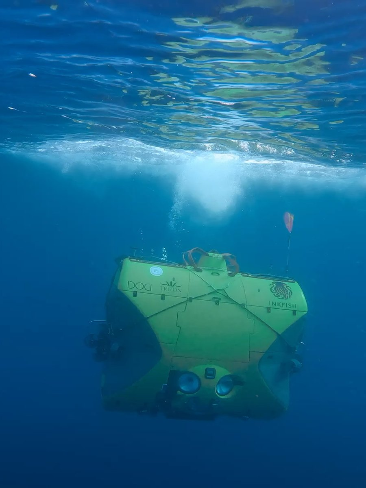
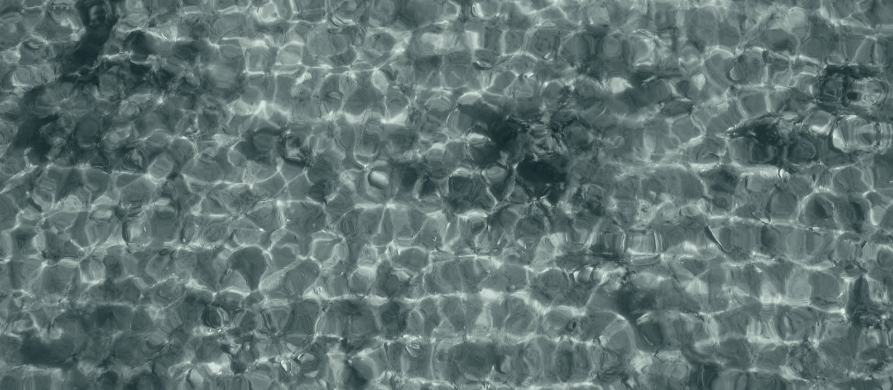
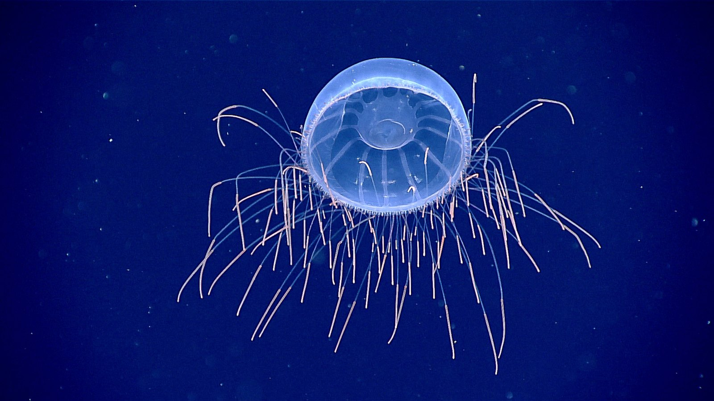
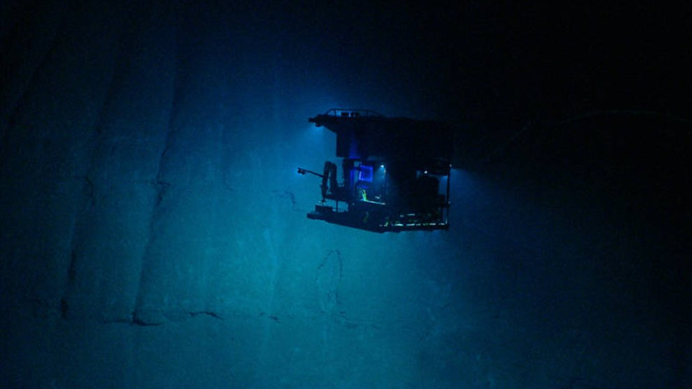
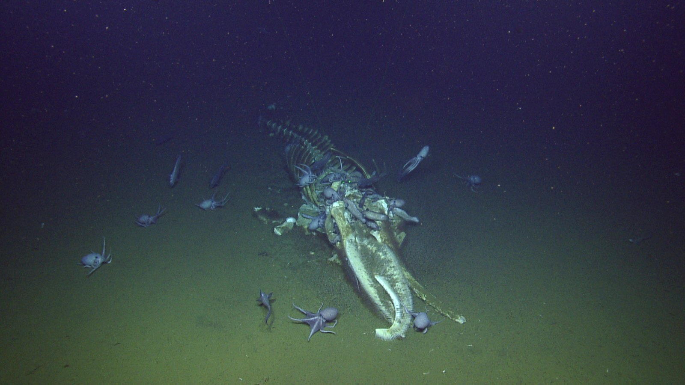
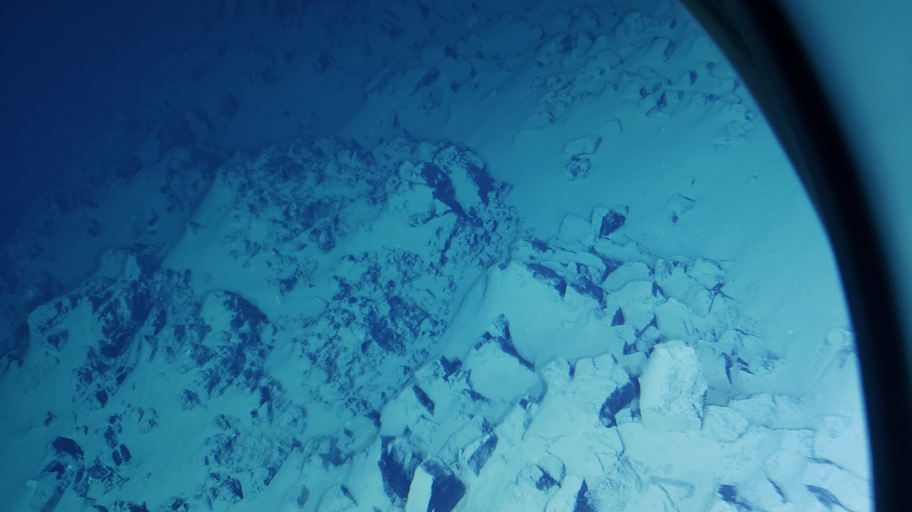

Kestrel
Work-class ROV
- Rating
- 6,000 m
- Tether
- 12 km fibre
- Tools
- Manipulators, suction sampler, 4K
In November, a small crew will descend the Tonga Trench to the Horizon Deep — 10,882 metres below this line. Follow the five-week survey, metre by metre, and help map one of the last unobserved places on Earth.

Light reaches roughly two hundred metres on a clear day. In that narrow band, phytoplankton turn sunlight into living matter, and produce about half of the oxygen in the air you are breathing. Most marine species live above this line.
The rest of the ocean — the cold, dark, enormous rest — begins below. It is not a place we visit. It is a place we are still learning how to see.

Surface light at noon, clear water. Below two hundred metres, photosynthesis stops. Everything after this is fed by what falls from above.
At dusk, the largest migration on Earth begins. Billions of lanternfish, squid and krill rise from the deep to feed in the dark shallows, then sink again before dawn — a moving layer so dense that early sonar operators mistook it for the seafloor.
Below six hundred metres, sunlight is gone. Most animals here make their own: a flash to startle a predator, a glow to match the water above, a row of lights that erases a silhouette from below.

No sunlight. Water at two to four degrees. Food arrives as marine snow — a slow fall of dead plankton, scales and mucus, perhaps two per cent of what the surface produced. Under four hundred bar of pressure, life becomes patient.
Fish with slow hearts. Sea cucumbers grazing a floor of fine silt. A whale that died at the surface, sinking for months, arriving as a decade of meals.

Work-class ROV
Free-fall lander
Multibeam sonar
Below four thousand metres, the water is close to freezing and entirely dark. This is the abyss — most of the ocean's volume, and the part we know least. A single whale fall can feed a community here for decades.

The Horizon Deep is the deepest point of the Tonga Trench and the second-deepest place on Earth. The water is a little above freezing. The trench walls are steeper than the Grand Canyon, and most of them have never been surveyed.
Expedition 07 will place three landers on the trench floor and fly the Kestrel along the western wall, sampling sediment, water and whatever lives there. Every metre of that wall is new ground.

Vertical scale compressed. Horizons are approximate.
Follow the dive, receive the field log, or come aboard as a research partner. We leave Nuku‘alofa on 2 November.
One email a month. Unsubscribe at any time.